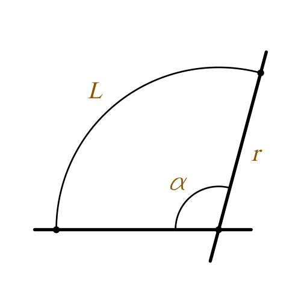

<svg class="round-loading" width="64" height="64" viewBox="0 0 64 64" fill="none" xmlns="http://www.w3.org/2000/svg">
<circle stroke="#333333" stroke-dashoffset="141.375" stroke-dasharray="188.5" stroke-width="3" cx="32" cy="32" r="30" transform="rotate(-90)" transform-origin="32 32"></circle>
</svg>
What we want to do is to draw a full circle. Radius is 30px. And unlike any other SVG's in the project we fill it with stroke:
Next we want to start cutting pieces from it making arcs. It can be done using stroke-dasharray. In this example we cut 10px long dashes:
Unfortunately we can't just pick one of these dashes and remove others. They will always fill circle completely. This is how stroke-dasharray works.
What we want to do instead is to make one dash that will be 100% long or in other words 360deg wide and then we will hide part of it. To make such long dash we need to find its width first. We need this formula: L = πrα / 180°, where:

So L = π * 30 * 360 / 180 = 188.5 and here it is:
Visually it looks like a normal circle, but technically it is one of those dashed and it is 188.5px long.
Now we can apply stroke-dashoffset on it. It is kinda moving rendered dash back to the void. Let's move it back by 20px:
And this is pretty much it! The exact value of pixels for stroke-dashoffset is value in between 0 and 188.5, where 0 is 100% of the progress:
and 188.5 is 0%:
(can't see anything above, because, well, it is on 0%)
Running formula backwards it will be:
dashoffset = 188.5 * (100 - progress) / 100;
Let's say we need an indicator that progress to 25%. Calculation will be:
dashoffset = 188.5 * (100 - 25) / 100 = 141,37 and here is the result:
One final touch is to rotate whole image a little so the beginning of progress bar is always on top. Transforms are being added to the circle:
and this is final code:
<svg class="round-loading" width="64" height="64" viewBox="0 0 64 64" fill="none" xmlns="http://www.w3.org/2000/svg">
<circle stroke="#333333" stroke-dashoffset="141.375" stroke-dasharray="188.5" stroke-width="3" cx="32" cy="32" r="30" transform="rotate(-90)" transform-origin="32 32"></circle>
</svg>
What you want to do is dynamically change value in stroke-dashoffset via JS.
Depending on the way you load data you may want to do animation using CSS. For example if you load something in pieces and they come once in few seconds, you have to change value rarely. In this cass CSS will do the trick.
Please add .round-loading--animated and all changes will be transitioned: